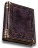

Set - Heyday
Warlock's Exploration
5 items, level 75, Warlock

Incarnadine Elven Plate
Mage Plate
Defense: 225-261
Required Level: 55
+2 to Warlock Skill Levels
Socketed (2)
+300-500 Defense
(2 items) ++2 to Demon Skills
(4 items) -10% to Enemy Magic Resistance

Tome of the Abyss
Occult Tome
Defense: 96-141
Chance to Block: 5%
Required Level: 60
+3-4 to Abyss (class only)
+30% Increased Maximum Mana
-10% to Enemy Magic Resistance
+1 to Warlock Skill Levels
(3 items) +20% Faster Cast Rate
(5 items) ++2 to Eldritch Skills

Lilarcor's Crown
Diadem
Defense: 50-60
Required Level: 64
+2 to All Skills
+100-150% Enhanced Defense
+15-20% to All Resistances
(2 items) +50% Chance Items Roll Magic or Better
(3 items) +10 to all Attributes
(4 items) +1 to Warlock Skill Levels
(5 items) +150 Defense

Teleomortis' Gloves
Bramble Mitts
Defense: 54-62
Required Level: 75
+1 to Warlock Skill Levels
+150-200 Defense
+10% to Magic Skill Damage
(2 items) +15% Faster Cast Rate
(3 items) -10% to Enemy Magic Resistance
(5 items) +50 to Life

Citadel Belt
Spiderweb Sash
Defense: 55-62
Required Level: 66
+2 to All Skills
+125-175 Defense
(2 items) +15% to All Resistances
(3 items) +15% Faster Hit Recovery
(4 items) ++2 to Chaos Skills
Set bonuses
- 2 items: +10% to Magic Skill Damage
- 3 items: +1 to Warlock Skill Levels
- 4 items: -15% to Enemy Magic Resistance
Full set
- +2 to Warlock Skill Levels
- +100% Chance Items Roll Magic or Better
- +50% to All Resistances
- +10 Life after each Kill
- +10 Mana after each Kill
- +5 to Weaken